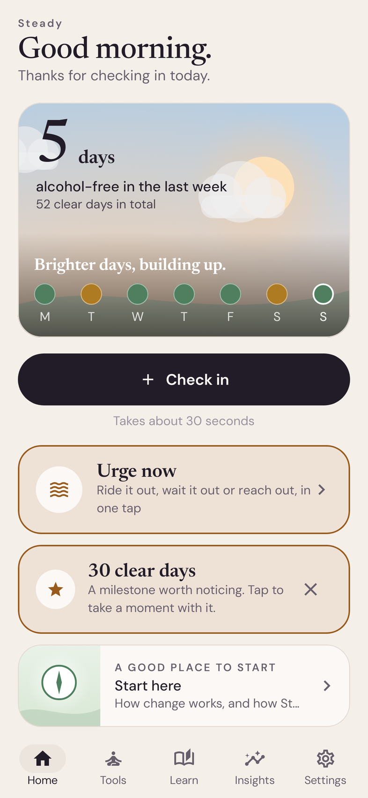
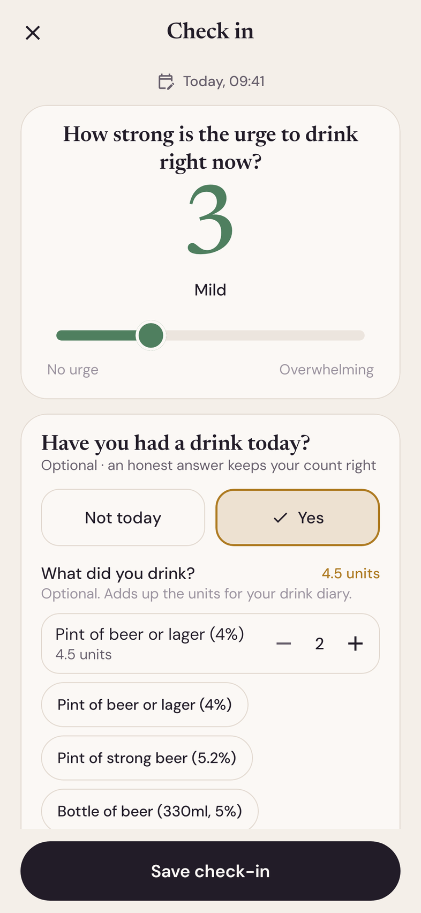
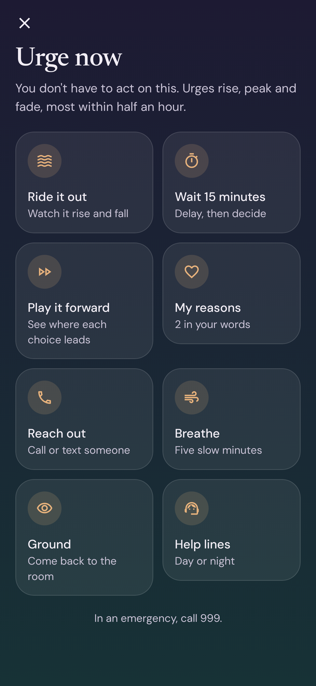
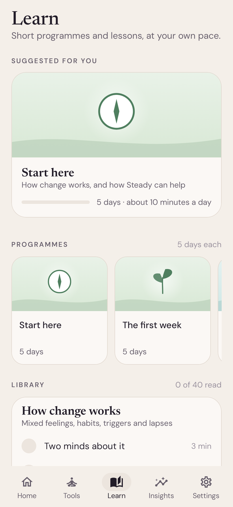
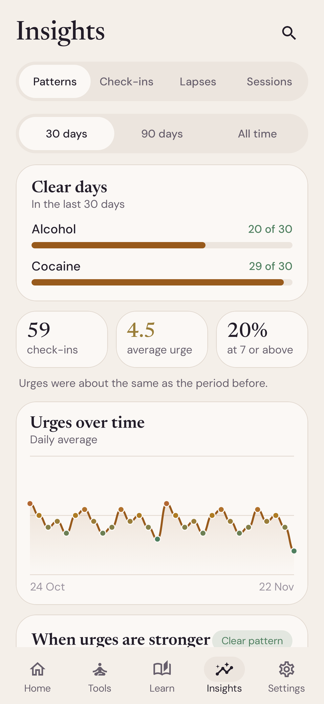
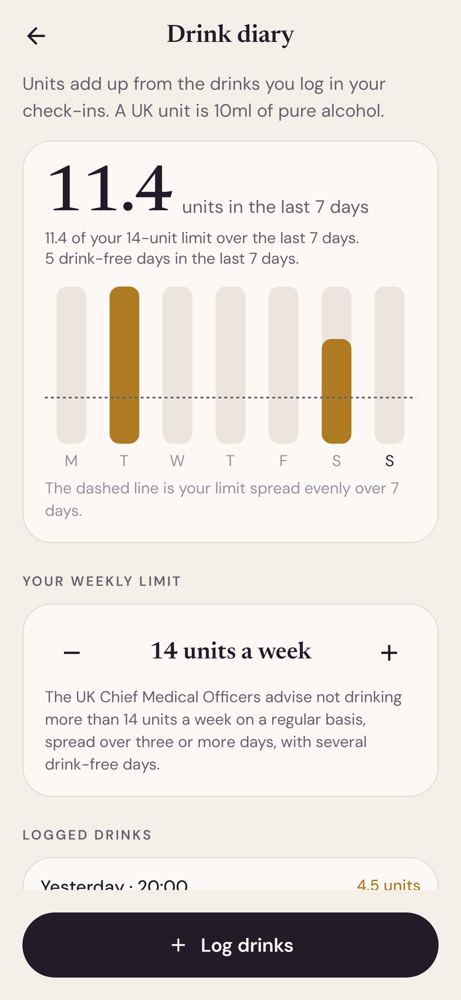
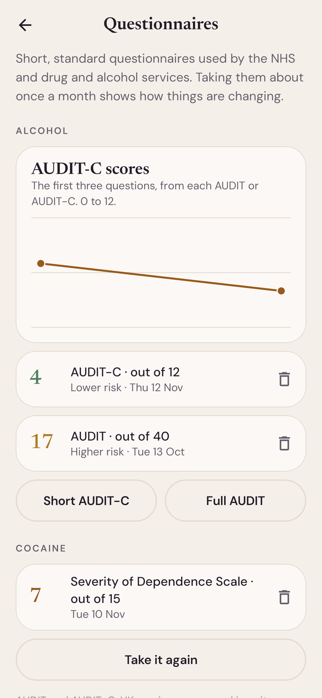
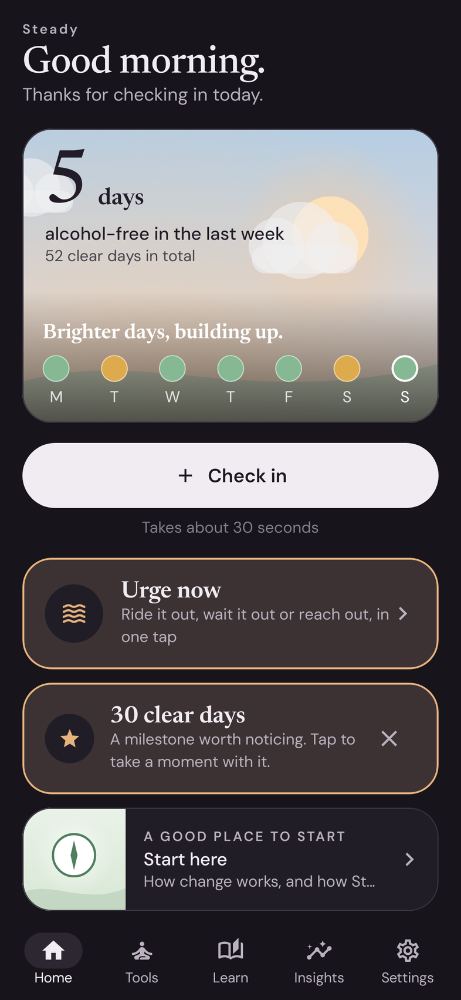

One clear day at a time.
Steady is an Android app for getting sober, coming off drugs, or both. Stop, cut down or work out what you want, count every clear day, get through cravings in one tap, and learn the skills that make change last.
It is free, with no adverts and nothing to unlock. There is no account, everything is encrypted on your phone, and nothing is sent to the developer.
Download for AndroidHow to install
- Version 1.0.0
- Android 8 or later
- 3.1 MB
Free, with nothing to unlock. No adverts, no account with the developer, no tracking. Compare or read the release notes.
Chrome may say the file might be harmful. It shows this for app files that do not come from Google Play. Choose Download anyway.

- No subscriptionEvery lesson and tool is in the free app.
- No advertsNone in the app and none on this site.
- EncryptedEverything kept on your phone, locked.
- Urge nowRide it out, wait it out or reach out, in one tap.
A look inside
These are the real screens, drawn from the app's own code with made-up check-ins. Swipe or scroll sideways to see them all.







How it works
Change sticks when you can see it, have a way through the hard moments and practise the skills that keep it going. Steady gives you all three, and never judges.
Set your plan
Choose what you want to change: alcohol, drugs or both. For each, choose to stop, cut down, or not decide yet. Steady counts from your last use.
Check in and get through urges
A check-in takes about thirty seconds. When a craving hits, Urge now helps you ride it out, wait it out or reach out.
Learn and look back
Short lessons, five-day programmes and tools from cognitive behavioural therapy and motivational interviewing. Insights shows what sets urges off and what helps.
Everything is in, and all of it is free
Nothing below is held back for a paid tier, because there is no paid tier.
Every day
- Clear days that count
- Your current run and your total clear days. The total never goes back to zero, because a lapse doesn't wipe out the days you've done.
- Check in in thirty seconds
- How strong the urge is, whether you drank or used, and if you want, the feeling, HALT, triggers, where you were, who with and what helped.
- Urge now, in one tap
- Ride the urge, wait fifteen minutes, play it forward, read your reasons, call or text your people, breathe, ground yourself or ring a help line.
Tools for the long run
- Thought Reframe
- Catch the thought that gives you permission, with eleven common traps such as “just one won’t hurt”, and answer it.
- Weigh it up and Risky times
- Weigh the good and less good of changing, and plan ahead for the times you know will be hard, with a private reminder.
- Rebuild
- Small, graded steps back towards the things that used to fill the gap.
Learning
- 40 short lessons
- Two or three minutes each, in eight topics, from how cravings work to cutting down safely and living well without it.
- Ten five-day programmes
- Each day has a lesson, something to try and one question to reflect on.
Your record
- Insights and gains
- Patterns in your urges, the money and time you are getting back, and gentle notes on what often changes.
- Drink diary and questionnaires
- UK units against a weekly limit, the AUDIT and AUDIT-C used by the NHS, and the Severity of Dependence Scale for drugs.
- A report for your GP or keyworker
- A clear PDF of your plan, clear days, check-ins, patterns and scores, previewed before you share it.
Safety first
- Stopping safely
- Clear guidance on when stopping suddenly needs medical help, for alcohol and benzodiazepines above all.
- Staying safer
- General harm-reduction information on overdose, mixing and emergencies, plus UK help lines for alcohol and drugs.
Private by design
- Locked and discreet
- Encrypted on your phone, with a PIN or fingerprint lock, and a home-screen name and icon of your choice.
- Backup you control
- A password-locked backup file and a daily copy to a folder you pick.
- Routines, widgets and Health Connect
- Tick off meetings, appointments and prescribed medicines, add widgets, and compare urges with sleep and steps if you like.
What you log is your business
Encrypted on your phone
Everything you enter is stored encrypted on the phone. The developer receives nothing.
No account, no servers
There is nothing to sign up to and nowhere your entries are sent.
No ads, no tracking
There is no advertising, analytics or tracking, in the app or on this site.
Installing and updating
Steady is not on Google Play, so your phone asks a couple of extra questions the first time.
Download the app file
Tap Download on your phone. The file is called Steady.apk and is about 3.1 MB. If Chrome says the file might be harmful, choose Download anyway.
Allow the install
Open the file. The first time, Android asks you to allow your browser to install apps. Allow it, go back and tap Install. If Google Play Protect steps in, choose More details, then Install anyway.
Updating later
Steady never goes online, so it cannot check for updates itself. New versions are listed on the release notes page: install the new file over the old one and everything you have saved is kept.
Version 1.0.0, released 22 November 2026. See the release notes, or check your download.
Questions
Is Steady really free?
Yes. There is no paid version, no subscription, no trial and no adverts, and nothing in the app is locked. The report for your GP or keyworker is free too.
Is it on Google Play?
No. Steady is a personal project and is downloaded from this site as an Android app file. It needs Android 8 or later, which covers almost every phone in use.
Is it just for alcohol?
No. You can add alcohol, cannabis, cocaine, opioids, benzodiazepines, ketamine, MDMA, amphetamines or something else, each with its own goal: stop, cut down or not sure yet.
What happens to my count if I slip?
Your current run starts again, but your total of clear days never resets. A short, kind review helps you see what happened and plan for next time.
Is it safe to just stop?
Not always. Stopping alcohol or benzodiazepines suddenly after heavy or regular use can cause dangerous withdrawal, including seizures. Steady shows this before you start. Talk to your GP or a local drug and alcohol service first.
Does it need the internet?
No. The app does not ask Android for internet access at all, so it cannot go online. Help lines and links open in your own phone or browser.
Where is my information kept?
Only on your phone, in the app's private storage, encrypted with a key held by Android. Nothing is uploaded, and the developer receives nothing.
Is Steady a treatment?
No. It is a self-help tool built on methods from cognitive behavioural therapy and motivational interviewing. It can sit alongside support from your GP, a drug and alcohol service or a mutual-aid group, but it does not replace them, and it is not a medical device.
What if I am in crisis?
Steady is not a crisis service. Call 999 if you or someone else is in danger. Samaritans are free on 116 123, day or night, and you can text SHOUT to 85258. FRANK is on 0300 123 6600, any time.
Why can I change the app's name and icon?
Some people would rather a recovery app did not announce itself on their home screen. You can show it as Steady, Journal, Notes, Daily, Planner or Balance, with one of eight icons. Reminders never mention drink or drugs.
What if I forget my PIN?
There is no way round the PIN, not even for the developer. You can clear the app's storage in your phone's settings, which deletes everything, and then restore your latest backup.
How do I move to a new phone?
In Settings, open Backup and export, set a backup password and save a backup file. Install Steady on the new phone, choose Restore from a backup and enter the same password.
Who made it?
Steady is made by Jonathan Jackson, an independent developer in the United Kingdom. It is not connected with the NHS or any other organisation or app maker.
One clear day at a time
Free, with no adverts and nothing to unlock. Made by the developer of several other free Android apps: see them all.